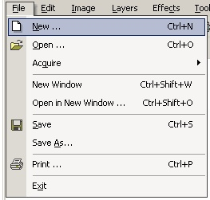

The New Operation (File-->New) clears the entire workspace of anything done in the past. For example the History is cleared, and any layers created or altered will be lost. But before this happens, you will of course get a confirmation at which point you may choose to save your previous work. Once
the New Operation is selected, you will then be presented with the window to
the left. Using this window, you can alter the size of the new image.
The memory requirements of the new image will also be displayed.
Once
the New Operation is selected, you will then be presented with the window to
the left. Using this window, you can alter the size of the new image.
The memory requirements of the new image will also be displayed.